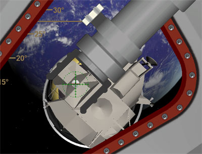

This section contains all necessary procedures for a complete moon landing mission (or it will contain when it's complete...). The checklists here are intended for scenarios with "quickstart realism mode" and are not working with standard mode scenarios. Use the "Apollo 11 Quickstart - Launch" scenario in the Project Apollo - NASSP folder for example or the scenarios in the "Quickstart Missions" subfolder.
The checklists are intended as a reference documentation and are no tutorial or user's guide. We'll provide additional informations in separate documents (hopefully) later.
Prelaunch and launch checklist
| Time |
Event/Action |
Remarks |
| -02:00:00 |
Prelaunch begins, everything runs automatically. |
Scenario starts 2h before lift-off, the time is needed for the prelaunch sequence of the internal systems. Use time acceleration up to 100 if you don't want to wait. |
| -00:00:20 |
Automatic launch sequence begins. |
Time acceleration is reset to 1 automatically. |
| 00:00:00 |
Lift-off, the Saturn is controlled by the autopilot. |
You should not use time acceleration until you reached earth orbit. |
| ca. 00:12:00 |
Engine cutoff, the spacecraft is in the almost circular earth parking orbit (EPO). You can control the SIVB manually now. |
Time acceleration is set to 1 automatically. |
Trans Lunar Injection (TLI) checklist
The next step on our journey to the moon is the Trans Lunar Injection, also called TLI. With a single burn of the SIVB engine we'll escape the EPO and extend our orbit so that we reach the moon. In future versions hopefully there will be a TLI "autopilot", at the moment you have to do it by your own. Of course you can do the TLI burn as you like, but we suggest to use the IMFD
off-plane intercept program together with the auto burn feature.
You can use the generic cockpit to control IMFD by using it's key codes, but we suggest to use the MFDs on the main panel or the G&N lower equipment bay panel just because there are easier to use. The following is no IMFD manual or tutorial, but just a short "checklist" to configure IMFD, use the IMFD manual for more informations on how to use it.
- Open IMFD
- Choose "Course" and then the "Off-Plane Intercept" program.
- Press TGT, enter "Moon"
- Press PG
- Press Z+ until you see the earth on the MFD.
- Press PG
- Press NXT until TIn (time to intercept) is highlighted.
- Press SET, enter "280k", this is a good default value we can start with.
- Press ADJ until 10x is displayed.
- Press NXT until TEj (time to ejection) is highlighted.
- IMFD chooses a default TEj automatically, but the real TLI burn was done during the 2nd orbit, so we have to move the ejection point one orbit later. Press +, the solid blue "earth radius line" begins to move counterclockwise around the earth, continue until the line is one orbit further, TEj should be now about 8000k to 9000k.
- Press ADJ until 1x is displayed.
- Press + or - , watch if the burn time (BT) decreases and play with different settings to find the point where the time (BT) is minimal.
- Now we've calculated a burn (or IMFD did that for us), but since the SIVB is quite low on fuel we should do some more burn time optimization: Press NXT until TIn (time to intercept) is highlighted.
- Press ADJ until 10x is displayed.
- Press + to increase the time to interception and look if the burn time (BT) decreases. If it does, increase TIn further to minimize BT, but make TIn not greater than 320k, otherwise you'll arrive at the moon a little bit late.
- Now you can again optimize TEj a little bit as explained above, again to minimize your burn time (BT).
- Burn calculation is done, now we let IMFD do the burn. Press PG.
- Press AB (autoburn).
- If you like use time acceleration until time to burn (TtB) is about 200s.
- Wait until autoburn is complete.
Transposition & Docking
Now we are on the way to the moon, but still connected to the launch vehicle, the SIVB stage. Next we'll separate the CSM from the SIVB, turn around (Transposition), dock with the LM in the SIVB stage and extract it. After that you'll be in the so-called CSM/LM stack flying to the moon, while the remaining SIVB stage will go it's own way. This manoever was done manually and so we'll do it.
- Press "J" on the keyboard to separate the CSM from the SIVB.
- Switch to the left rendezvous window panel, use <CTRL><UP> and <CTRL><LEFT> when you look at the main panel. Don't scroll this panel if your screen resolution is too small, otherwise the COAS will not work properly.
- After CSM separation you have full Orbiter-like control over the CSM via it's RCS thrusters, both rotational and translational mode. So switch to rotational and pitch up with about 5°/sec. until you did a 180° turn and look at the SIVB with the LM inside.
- Engage the COAS (the arm with the "reticle") by clicking on it.
- Now you can begin to move towards the LM by using linear thrust and to correct your attitude for docking. You are in correct position when the COAS directly points to the docking target (upside-down "T") on the LM and you don't see the red part of the docking target. This looks like this:

- Additionally you can you the MFD on the panel. If it's turned off, press the small, red PWR button to turn it on. Choose the Docking MFD and press VIS for visual acquisition mode. Then use it as explained in the Orbiter manual.
- When you are close enough the CSM docking probe automatically docks with the LM.
- Press "J" on the keyboard to separate the CSM/LM stack from the SIVB.
The CSM/LM stack is now free and slowly moving away from the SIVB, you are on the way to the moon!
To be continued...
Back